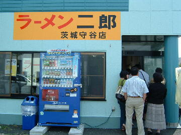
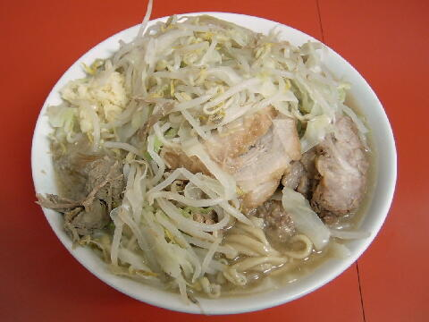
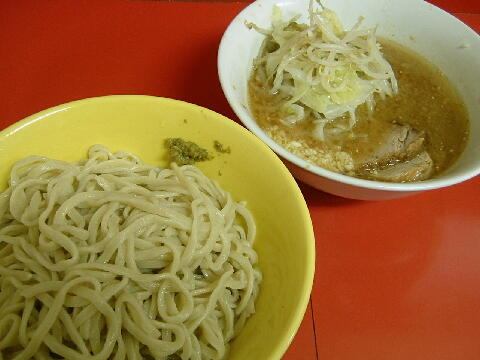
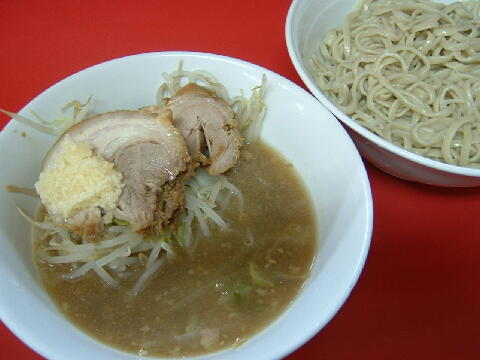

守谷市 美園 4-1-5
日
10：30〜14：15 17：30〜21：30
土 10：00頃〜16：00

小ラーメン 750円、小ラーメン豚入り 900円、小ラーメン豚入りダブル 1050円（売切）
大ラーメン 850円、大ラーメン豚入り 1000円、大ラーメン豚入りダブル 1150円（売切）
麺半分豚2枚 700円、麺半分豚1枚 650円
生卵 50円、うずらの卵５コ 100円、玉ねぎ 50円
白ネギ 100円（現金）、味ネギ 100円（現金）、ニンニクの芽 50円（現金）、チーズ 100円（現金）
ウーロン茶 100円、缶ビール 300円（現金）
店員は、少しクセのある店主と助手数名。
コショウ、トウガラシ。外に醤油ダレ、酢、黒コショウ。
レンゲ有。トイレットペーパー。名刺無。
BGMは、FMでのAM。
トッピングは、二郎標準。
ラーメン二郎 茨城守谷店 茨城守谷店のTwitter
「ラーメン二郎 守谷」でヤフー検索
「ラーメン二郎 守谷」でヤフーリアルタイム検索
「ラーメン二郎 守谷」でグーグル検索

小ラーメン豚入り ニンニク
麺は、小麦の風味が良い柔らかめのもの。量は二郎標準。カタメはできない。
ぶたは、程好く味が付いた柔らかくて大きい豚が野菜の下に。よかっぺ！
スープは、今回は乳化傾向のものだったが、乳化したり醤油が立ったりとぶれている模様。
ヤサイは、他店と比較するとキャベツの割合が多い。歯応えはクタ。
ニンニクは、しっかり辛い中粒のもの。
＋50円でおろしニンニクがたくさん入れられたニンニク味のラーメンにしてくれる。
提供は不定期。

小ラーメン＋つけ麺（ごま油） ニンニク

小ラーメン＋つけ麺（ニンニク） ニンニク
つけ麺は店員の指示に従い申告し、着席時に100円玉を添えるシステム。
トッピングはラーメンと同じ。
つけ汁の丼には、ヤサイとぶたとニンニクが入る。ゴマも少々。タレはごま油の風味と酸味があるタイプ。
他におろしニンニクがたくさん入れられたニンニクつけ麺もある。
麺の丼には、少し暖かさが残る程度に冷された麺。そのためか小麦の風味がよく香る。
あと、柚子こしょう。二郎とよく合っていて良いアクセント。（現在はなし）
提供は不定期。
ＰＣ店